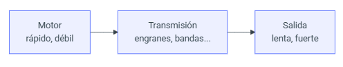
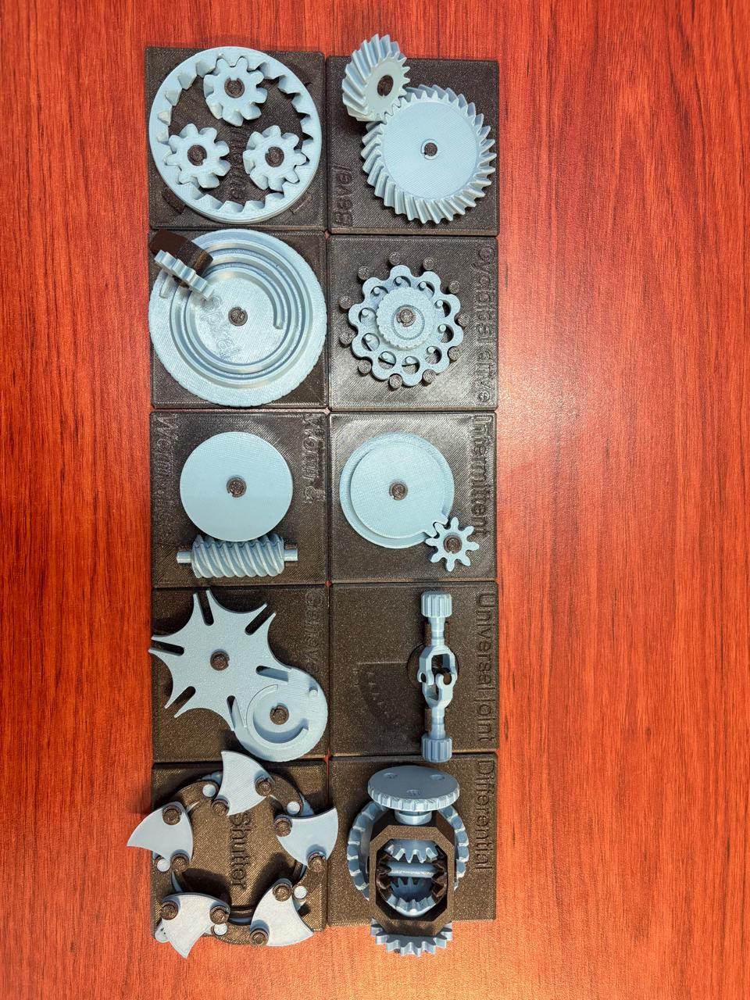
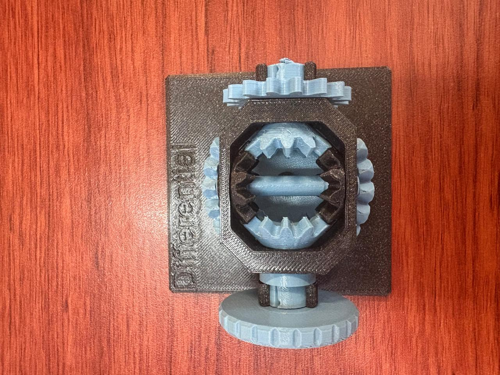
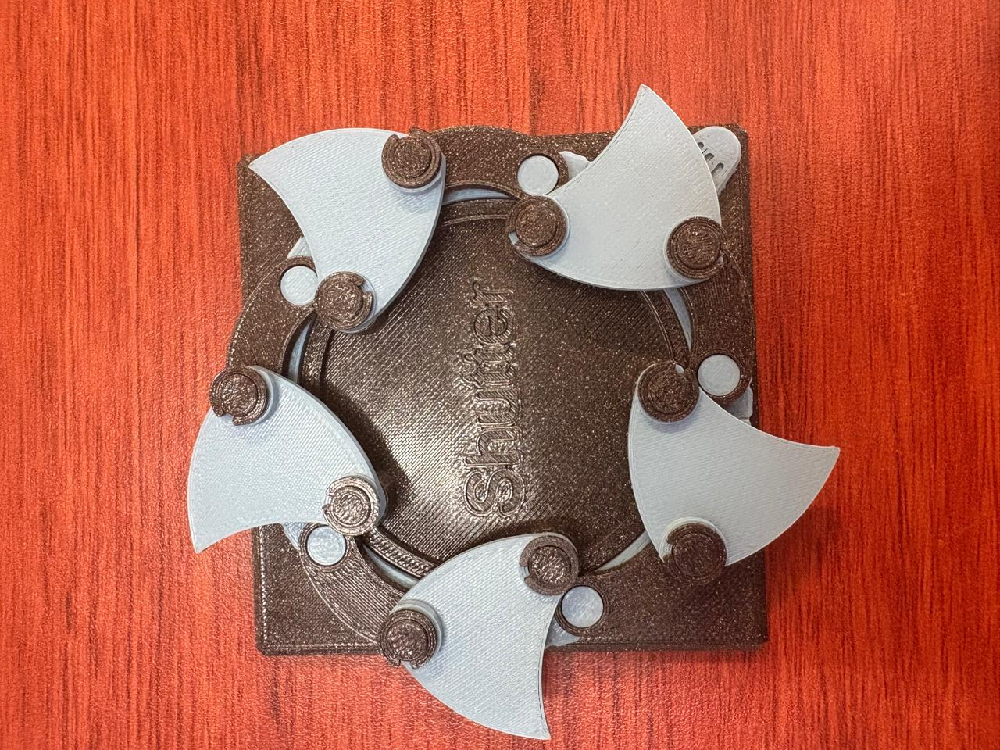
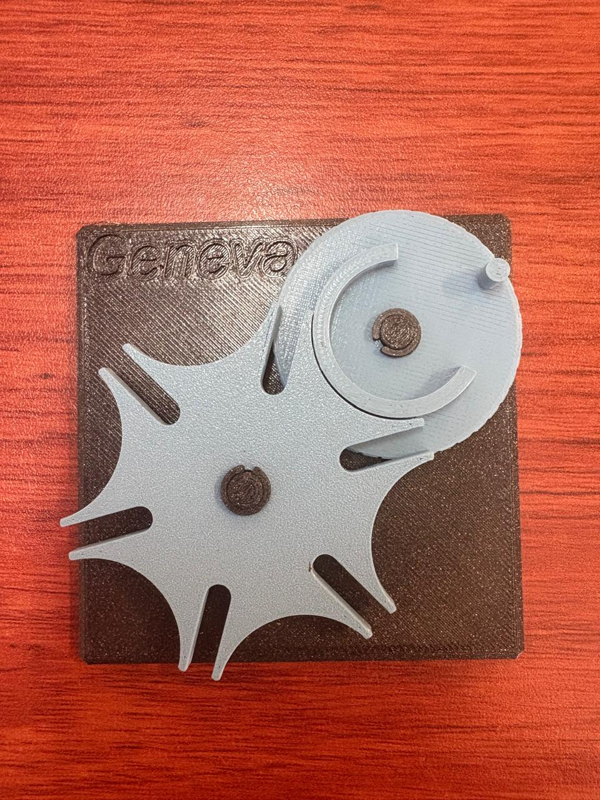
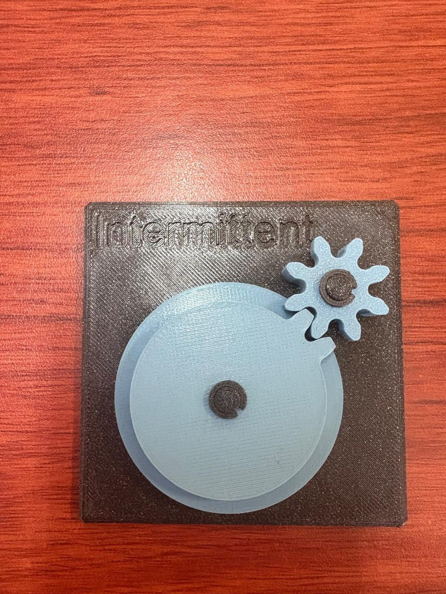
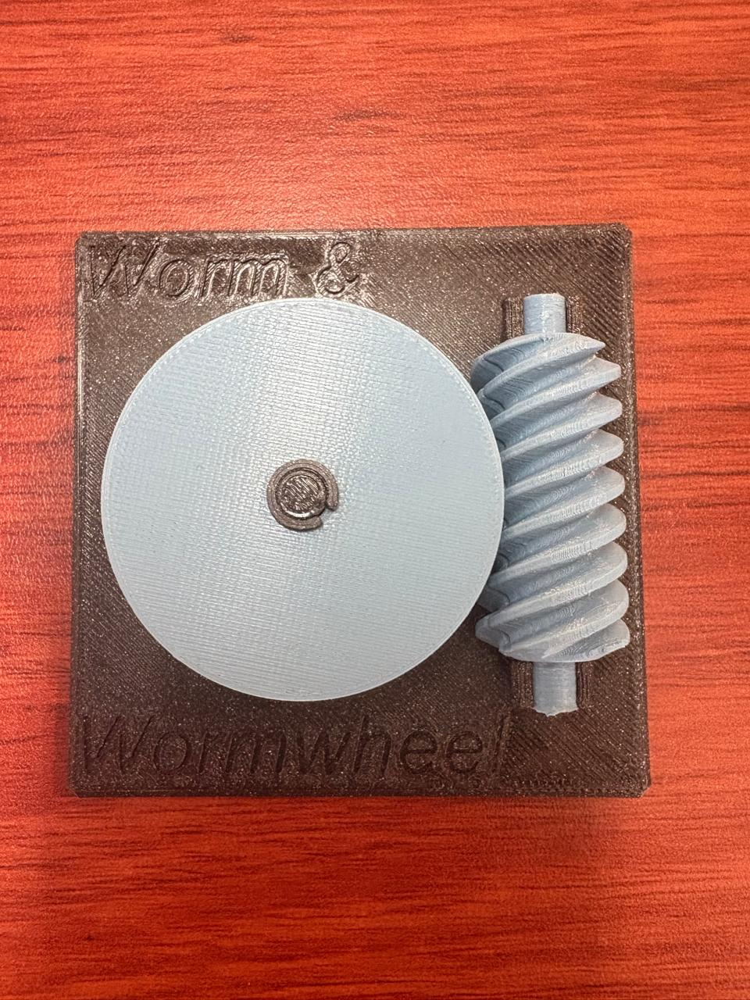
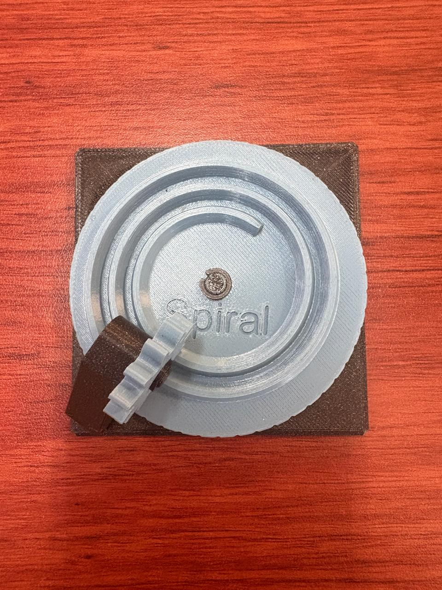
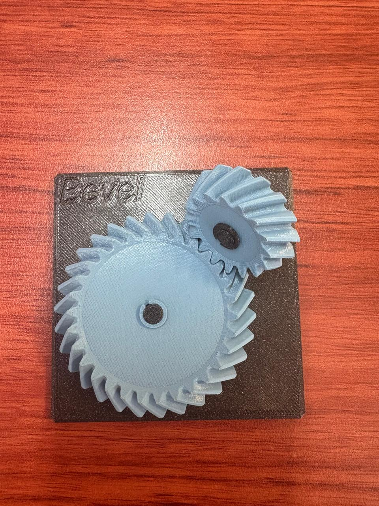

Sesión 5 — Título c
Qué debía lograr hoy
- Entender cómo los mecanismos transforman el movimiento
- calcular relaciones de transmisión simples
Qué usé
- Planetary en 3D
- Bevel en 3D
- Spiral en 3D
- Cycloidal drive en 3D
- Worm/Worm drive en 3D
- Pulley en 3D
- Intermittent en 3D
- Geneva en 3D
- Universal joint en 3D
- Shutter en 3D
- Differential en 3D
Qué hice y qué pasó (evidencia)
Tabla de estaciones

Diagrama donde se ilustra cómo un motor rápido y débil se convierte en salida lenta y fuerte mediante engranes o bandas.Relación de transmisión
La relación de transmisión (i) compara los dientes de dos engranes acoplados: uno de entrada (Z₁) y uno de salida (Z₂). La fórmula es:
i = Z₂/Z₁ = ω_entrada/ω_salida = τ_salida/τ_entrada
Explicación: - Si i > 1 (el engrane de salida tiene más dientes que el de entrada), el sistema reduce: la salida gira más lento pero con más fuerza (par). - Si i < 1 (el engrane de salida tiene menos dientes), el sistema multiplica: la salida gira más rápido pero con menos fuerza. - Velocidad y par están en relación inversa: si divides la velocidad entre i, obtienes la velocidad de salida; si multiplicas el par de entrada por i, obtienes el par de salida (restando pequeñas pérdidas por fricción).
Trenes compuestos: cuando se conectan varias etapas de engranes en serie, sus relaciones individuales se multiplican entre sí. Por ejemplo, dos etapas con relación 1:4 y 1:16 combinadas dan una relación total de 1:64 — así es como una caja reductora pequeña (como la de un motor TT) logra una reducción grande (1:48) en poco espacio.
Ejemplo: un piñón de 12 dientes mueve un engrane de 36 dientes → i = 36/12 = 3. Esto significa que la salida gira a 1/3 de la velocidad de entrada, pero con 3 veces más par (fuerza).
los engranes no crean energía, solo la "convierten" — cambian velocidad por fuerza o viceversa, dependiendo de cuántos dientes tenga cada uno.
Tabla de estaciones
| Estación | ¿Qué transforma? (vel↔par, rot↔trasl, continuo↔intermitente, cambio de eje) | Relación i estimada (cuenta dientes o vueltas) | ¿Reversible o autobloqueante? | ¿Dónde lo has visto en la vida real? | ¿Dónde serviría en el carro o en un proyecto tuyo? |
|---|---|---|---|---|---|
| A · Diferencial | Reparte un giro de entrada en dos salidas que pueden girar a distinta velocidad, manteniendo el mismo par | Corona-piñón típica ~3:1 a 4:1; satélites internos 1:1 | Reversible (no autobloqueante) | completar aquí | Eje trasero/delantero: permite que las ruedas internas y externas giren a distinta velocidad en curvas |
| B · Reductor cicloidal | vel↔par: reducción enorme en muy poco espacio, con poco backlash | (cuenta vueltas de entrada por cada vuelta de salida) | Cercano a autobloqueante por su alta fricción interna | Modelo de práctica (engrane azul con lóbulos internos) | Articulaciones de robots industriales; actuadores de dirección asistida |
| C · Junta cardán (universal joint) | Cambio de eje: transmite rotación entre ejes que forman un ángulo; la salida no es pareja (acelera/desacelera dos veces por vuelta) | 1:1 en promedio, con fluctuación cíclica | Reversible | Modelo de práctica (junta azul tipo universal joint) | Flecha de transmisión entre la caja de velocidades y el diferencial |
| D · Obturador de láminas (leaf shutter) | Continuo→intermitente: una sola entrada mueve varias láminas sincronizadas por un anillo | (depende del número de láminas) | No autobloqueante, el anillo gira libre en ambos sentidos | Modelo de práctica (obturador negro con aspas azules) | Diafragma de cámara; iris mecánico para regular flujo de aire o luz |
| E1 · Engrane cónico espiral | Cambio de eje: transmite rotación entre dos ejes perpendiculares (90°) mediante dientes en espiral, con contacto gradual y más suave que un cónico recto | (cuenta dientes del piñón y la corona) | No autobloqueante | completar aquí | Par cónico del diferencial trasero (conecta la flecha cardán con la corona) |
| E2 · Junta cardán | Cambio de eje: igual que la estación C, transmite rotación entre ejes angulados con velocidad de salida no uniforme | 1:1 en promedio, con fluctuación cíclica | Reversible | completar aquí | Flecha de transmisión, normalmente en pares (doble cardán) para cancelar la irregularidad |








